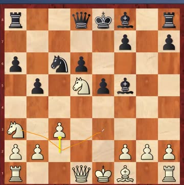
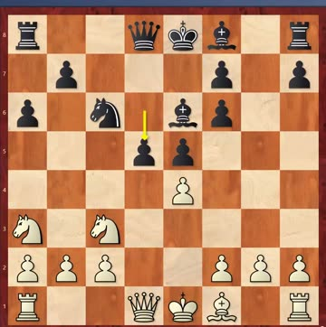
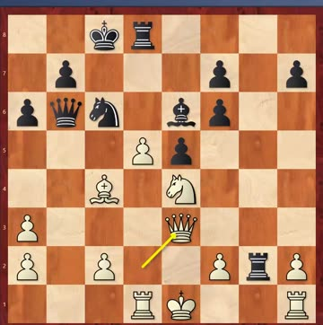
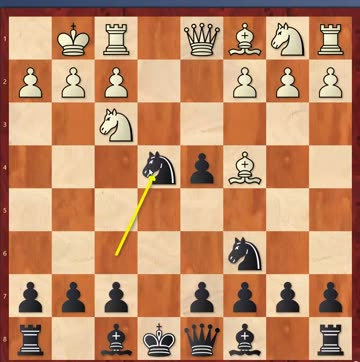
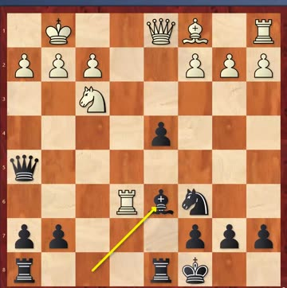
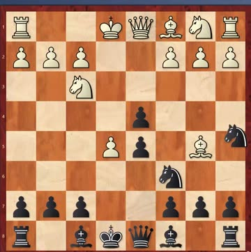

“If you can mate in three, don't take four”
This was JJ's hidden set, so the playable boards now show the full lines. Five are Black to move; 52 is White.
The line of the day came out of puzzle 49. One student found a mate — but a four-move one, when a three-move mate was there:
Coach also said something worth repeating: when he sets the sheet, he solves it himself first, the same as the students — and on 49 his first instinct was the same four-move try.
The new sheet, 55–60, is up as playable boards with the answers hidden — all six are mates in four, and every one starts with a sacrifice.
B44 Sicilian · Candidates final, Buenos Aires, game 1 · 30 Sep 1971 · Fischer had White · 1–0 · match finished +5 −1 =3
Twelve straight wins, and now the final. After 6–0 against Taimanov and 6–0 against Larsen, Fischer met Tigran Petrosian — a former world champion, and the hardest kind of opponent: stubborn in defence and dangerous in attack. The winner would challenge Spassky for the world title.
This time the venue didn't go Fischer's way by accident. Both previous opponents had agreed to play in the Americas and regretted it. Petrosian wanted Athens; Fischer wanted Buenos Aires. Neither would give in, so they drew lots — and Fischer won the draw. Petrosian flew for three days to get there.
Petrosian brought a secret weapon, and it arrived by post. A little-known player from Moldova, Chebanenko, had studied Fischer's win over Taimanov in this exact line, found an improvement, and wrote to Petrosian offering it. No internet, no email — the letter took about two weeks to reach Moscow.



▶ Live board. The opening on a board — play it up to the move that came in the post:
What it does. The game went 1.e4 c5 2.Nf3 e6 3.d4 cxd4 4.Nxd4 Nc6 5.Nb5 d6 6.Bf4 e5 7.Be3 Nf6 8.Bg5 Be6 9.N1c3 a6 10.Bxf6 gxf6 11.Na3, and now 11…d5! — a pawn offer in the middle of everything, worked out at home with no computer. ChessBase still marks it N for novelty and writes 'bomb' from Moldova beside it.
Then the lights went out. The game was in a two-thousand-seat theatre, packed. The stage lighting short-circuited. Petrosian asked the arbiter to stop the clocks and stepped away politely. Fischer — who had just walked into a prepared novelty and gone red in the face — stayed at the board, working in the gloom. Petrosian objected: the clock is stopped, he shouldn't be thinking. The arbiter agreed and told Fischer to step away.
He would rather burn his own time than break his train of thought. His clock was restarted, he thought for thirteen minutes in the half-dark, and played 15.Bc4. The thirteen minutes are still recorded in the database next to the move.
And then Petrosian didn't play his own preparation. He had a line analysed at home that leaves White's king stuck in the centre and, the engine now confirms, gives Black a clearly better game. At the board he chose the safe, drawish continuation instead. He never explained why — not even in his own notes on the game.
Coach's reading: it was his character. Petrosian was the steadiest player in the world, he was playing Black in game 1 before he'd warmed up, and what he really wanted was to stop the twelve-game winning streak rather than win. He took the safe road — and lost anyway.
C44 Scotch Gambit · 1.e4 e5 2.Nf3 Nc6 3.d4 exd4 4.Bc4 · Black's side again · very common in Bay Area events
What it is. After 3.d4 exd4 White doesn't bother taking the pawn back — 4.Bc4 just develops and aims at f7. Coach has shown the Centre Game, the Danish, the Ponziani and the Evans; this is the one he says you will actually meet most often around here.
This week: 4…Nf6, hitting e4. (He'll do 4…Bc5 next week — both are fine, it's a matter of whether you like putting the knight or the bishop out first.)



▶ Live board. Play it through — the move to remember is …d5:
The one move to remember is …d5. After 4…Nf6 5.e5, the knight looks like it has to run — and if you move it again you lose time and your pieces stay at home. Instead play 5…d5!, giving the pawn back to open your own position. The engine agrees: 5…d5 is dead level, while moving the knight is already slightly worse.
Then: after 6.Bb5 Ne4 7.Nxd4 Bd7 8.Bxc6 bxc6 you keep the two bishops and castle. If White tries a discovered check, block it with …Be6. If Bg5 stops you castling, trade pieces first. And don't grab a second pawn when c3 comes — …d5 is the answer there too.
Coach changed his own mind after forty years. He used to put the queen on a5 in this line and had played it that way since he was a boy. He now prefers …Qe7 — it defends his own side and eyes the opponent's at the same time.